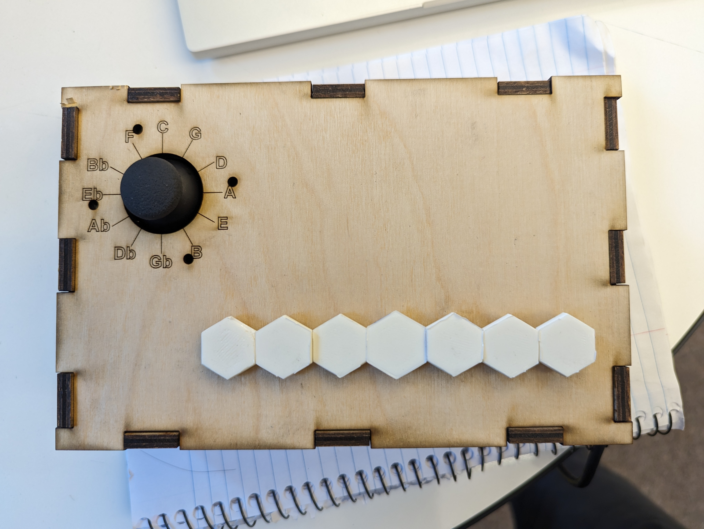
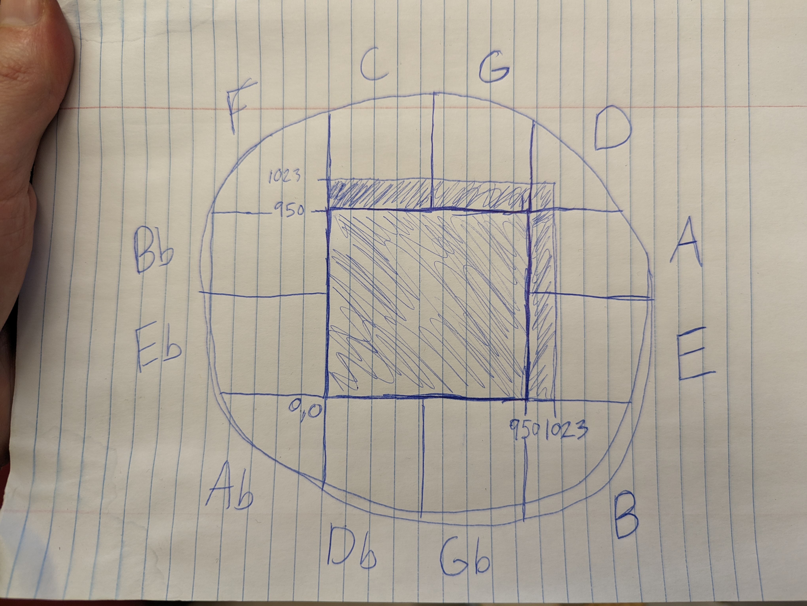
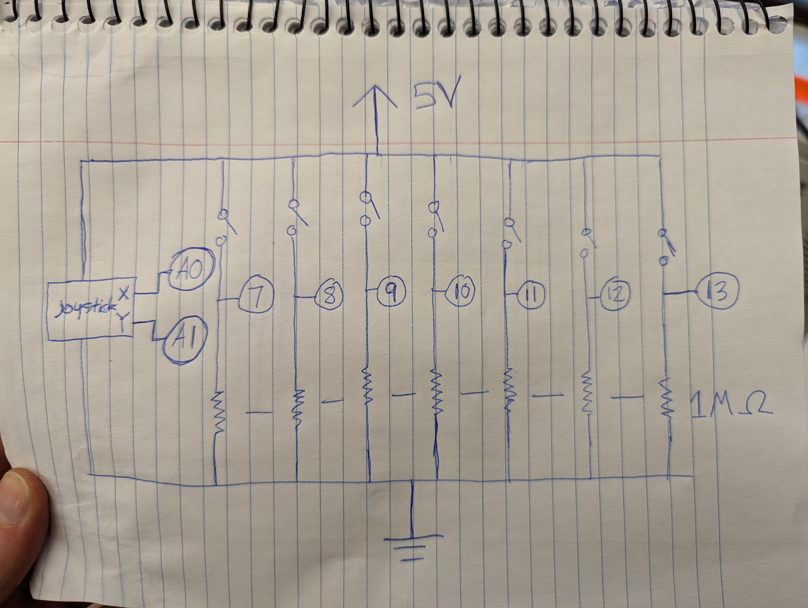

For my final project I made a synth! unlike other synths it play just intonation frequencies in every key. It uses a the 7 keys of a major scale with 7 buttons and a joystick to select keys.
String key = "C"; // sets strating key to C
int xVal; // x value of joystick
int yVal; // y value of joystick
// set pins for each key
const int key1 = 7;
const int key2 = 8;
const int key3 = 9;
const int key4 = 10;
const int key5 = 11;
const int key6 = 12;
const int key7 = 13;
void setup()
{
Serial.begin(9600); // start serial connection
// set button inputs
pinMode(key1, INPUT);
pinMode(key2, INPUT);
pinMode(key3, INPUT);
pinMode(key4, INPUT);
pinMode(key5, INPUT);
pinMode(key6, INPUT);
pinMode(key7, INPUT);
}
void loop(){
// reads joystick values and contrains them slightly to avoid voltage drop issues
xVal= constrain(analogRead(A0), 0, 950);
yVal= constrain(analogRead(A1), 0, 950);
// opens if the border of the joystick is read
if (yVal == 950 and xVal == 950){
key = "F";
}
if (yVal >= 950 and xVal >= 505 and xVal < 950){
key = "C";
}
if (yVal == 950 and xVal >= 0 and xVal < 505){
key = "G";
}
if (yVal == 950 and xVal == 0){
key = "D";
}
if (xVal == 0 and yVal < 950 and yVal >= 514){
key = "A";
}
if (xVal == 0 and yVal < 514 and yVal >= 0){
key = "E";
}
if (yVal == 0 and xVal == 0){
key = "B";
}
if (yVal == 0 and xVal > 0 and xVal <= 507){
key = "Gb";
}
if (yVal == 0 and xVal >= 507 and xVal < 950){
key = "Db";
}
if (yVal == 0 and xVal == 950){
key = "Ab";
}
if (xVal == 950 and yVal > 0 and yVal <= 514 ){
key = "Eb";
}
if (xVal == 950 and yVal > 514 and yVal < 950){
key = "Bb";
}
// formats data to send through serial
String data = String(digitalRead(key1))+ String(digitalRead(key2))+
String(digitalRead(key3)) + String(digitalRead(key4))
+ String(digitalRead(key5)) + String(digitalRead(key6))
+ String(digitalRead(key7)) + key;
delay(50); // delay to avoid serial com issues
Serial.println(data); // sends data to p5
}
// Declare global variables
let port, connectBtn;
let polySynth; // synth object
let buttonState = 1;
let homeKey = 261.63;
let newKey = "C";
let intervals = [1, 9 / 8, 5 / 4, 4 / 3, 3 / 2, 5 / 3, 15 / 8]; // note ratio based on root
let freqs = []; // holds calculated frequencies after key change
// array of playing states for each note
let playing = [false, false, false, false, false, false, false];
// preset frequencies for each key root
rootFreqs = {
C: 261.63,
G: 392/2,
D: 293.67,
A: 440/2,
E: 329.63,
B: 493.88/2,
Gb: 369.99/2,
Db: 277.18,
Ab: 415.31/2,
Eb: 311.13,
Bb: 466.16/2,
F: 349.23,
};
const BAUD_RATE = 9600; // Sets serial rate to match arduino
function setup() {
setupSerial(); // Run our serial setup function (below)
// creates a canvas that is the size of browser window.
let cnv = createCanvas(windowWidth, windowHeight);
// p5 text settings. BOLD and CENTER are constants provided by p5.
// See the "Typography" section in the p5 reference: https://p5js.org/reference/
textFont("system-ui", 200);
textStyle(BOLD);
textAlign(CENTER, CENTER);
// Setup synth and audio blocks and connect chain
polySynth = new p5.PolySynth(); // creates synth object
mixGain = new p5.Gain(); // creates gain object
mixGain.connect(); // connects gain to audio output
polySynth.disconnect(); // disconnects from audio output
polySynth.connect(mixGain); // sends synth sounds to gain object
mixGain.setInput(polySynth); // connects synth as input
mixGain.amp(1); // sets total output volume to max
userStartAudio(); // starts web audio
}
function draw() {
const portIsOpen = checkPort(); // Check whether the port is open (see checkPort function below)
if (!portIsOpen) {
// This sends signal to turn off LED if disconnected from arduino
return; // If the port is not open, exit the draw loop
}
let str = port.readUntil("\n"); // Read from the port until the newline
if (str.length == 0) return; // If we didn't read anything, return.
// sets new key from serial data
newKey = (str.charAt(7) + str.charAt(8)).trim();
// check to see if key has changed
if (homeKey !== rootFreqs[newKey]) {
homeKey = rootFreqs[newKey]; // sets new key to home key
changeFreqs(homeKey); // calls key change function
}
background("darkcyan"); // Background color
fill("coral"); // Fill color for the text
text(newKey, windowWidth / 2, windowHeight / 2); // Position text in center of the screen
// loop starts and stops notes based on serial data
for (i = 0; i <= 6; i++) {
buttonState = Number(str.charAt(i)); // converts the indexed string to a number
if (buttonState === 0) {
// If the button is not pressed
polySynth.noteRelease(freqs[i]); // turn off freq
playing[i] = false;
}
else if (buttonState === 1) {
// If the button is pressed
if (playing[i] === false) {
polySynth.noteAttack(freqs[i], 1); // start playing freq
playing[i] = true; //
}
}
}
}
// creates new set of frequencies based on new key
function changeFreqs(root) {
for (i = 0; i <= 6; i++) {
freqs[i] = root * intervals[i]; // multiplies root by interval ratio
playing[i] = false; // set all playing states off
polySynth.noteRelease(); // turns off all current notes
}
}
// Three helper functions for managing the serial connection.
function setupSerial() {
port = createSerial();
// Check to see if there are any ports we have used previously
let usedPorts = usedSerialPorts();
if (usedPorts.length > 0) {
// If there are ports we've used, open the first one
port.open(usedPorts[0], BAUD_RATE);
}
// create a connect button
connectBtn = createButton("Connect to Arduino");
connectBtn.position(5, 5); // Position the button in the top left of the screen.
connectBtn.mouseClicked(onConnectButtonClicked); // When the button is clicked, run the onConnectButtonClicked function
}
function checkPort() {
if (!port.opened()) {
// If the port is not open, change button text
connectBtn.html("Connect to Arduino");
// Set background to gray
background("gray");
return false;
} else {
// Otherwise we are connected
connectBtn.html("Disconnect");
return true;
}
}
function onConnectButtonClicked() {
// When the connect button is clicked
if (!port.opened()) {
// If the port is not opened, we open it
port.open(BAUD_RATE);
} else {
// Otherwise, we close it!
port.close();
}
}
One of the tricky parts of this project was mapping the square of potentiometer readings from the joystick to the cricle of fifths.
I chose to use only the border readings, but seemed to have some leak in voltage when pressing buttons, so I constrained the readings

As you can see in the schematic I chose very high resistors for my buttons, which significantly reduced the voltage leak from the bottons
.
